Conteúdo:
Objetivo: Caracterizar o mundo atual. Identificar e entender as principais características da sociedade no capitalismo atual, a divisão internacional do trabalho e suas desigualdades socioespaciais e os processos que ocorrem no espaço geográfico.
Introdução
Essa última etapa do ensino médio promete ser muito agitada em relação ao aprendizado da Geografia. Isso porque vamos embarcar em uma jornada pela Geografia do mundo.
Ao longo deste ano, exploraremos a população mundial, seu crescimento e movimentos demográficos. Analisaremos o desenvolvimento e qualidade de vida, abordando indicadores como educação, saúde e poder de consumo, e sua relação com o progresso das nações. Investigaremos o impacto da industrialização na formação de blocos econômicos e na globalização.
Conheceremos diferentes regiões, como América do Norte, Américas Central e do Sul, África e Oriente Médio, compreendendo seus desafios, conflitos e desigualdades. Abordaremos também temas como agricultura, redes de transporte e comércio global. E ai, Estão preparados para explorar a diversidade da Ásia, Oceania e União Europeia, e desvendar os segredos da dinâmica do mundo atual?
Vamos lá! E para isso temos a honra de conhecer o maior geógrafo brasileiro de todos os tempos!
Questões para serem respondidas no caderno sobre o tema da aula de hoje:
1. Como o autor descreve os três mundos (primeiro, segundo e terceiro) e o que essa visão sugere sobre as diferenças entre eles?
2. O autor critica o modelo atual de globalização. Quais são os principais problemas apontados e qual seria uma alternativa mais justa segundo ele?
3. De que maneira as redes geográficas são utilizadas como instrumentos de poder e controle no mundo globalizado?
4. Por que a globalização não deve ser vista como um processo imutável? Que fatores podem transformá-la?
5. Como a globalização contribui para a exclusão social e para o surgimento de uma "contraordem"? Que papel a resistência e o desejo de mudança desempenham nesse contexto?
6. Qual a diferença entre crescimento econômico e desenvolvimento humano? Por que essa distinção é importante para compreender o mundo atual?
7. Explique como a Divisão Internacional do Trabalho reforça as desigualdades entre países desenvolvidos e subdesenvolvidos.
8. O que são desigualdades socioespaciais? Dê um exemplo presente no Brasil ou em sua cidade.
9. De que forma o avanço das tecnologias e da informação pode tanto ampliar oportunidades quanto aprofundar desigualdades no contexto da globalização?
10. Segundo uma perspectiva crítica da Geografia, qual deve ser o papel dos cidadãos e dos Estados na construção de um modelo de globalização mais justo e humano?
Duvid - Podcast
Duvid – Entrevista Milton Santos (1926-2001 - in memoriam)

Milton Santos: O Pensar Crítico
Adaptação didática do livro "Por uma outra globalização" (2001)
PÁGINA 1: OS TRÊS MUNDOS
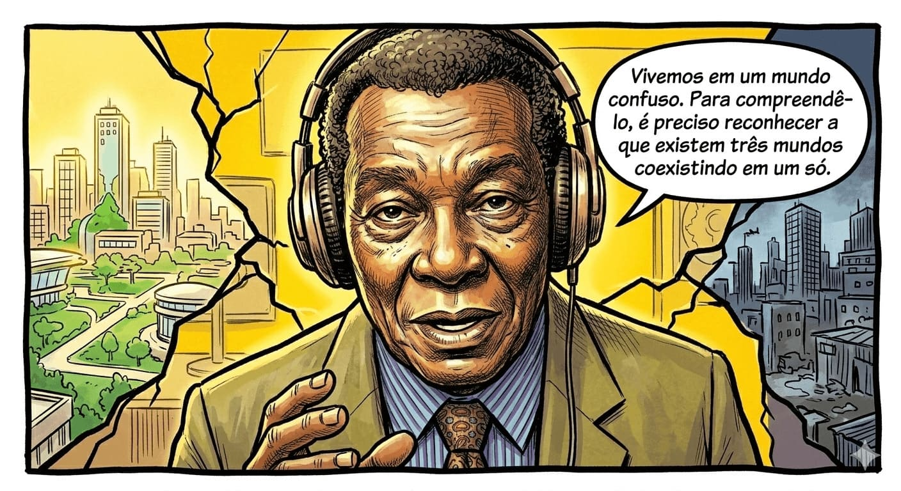
Milton Santos explica a coexistência dos três mundos.
PÁGINA 2: FÁBULA E PERVERSIDADE
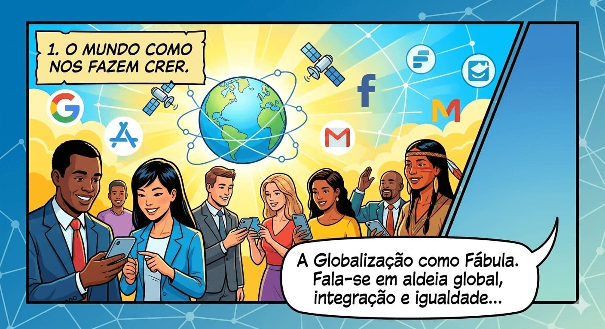
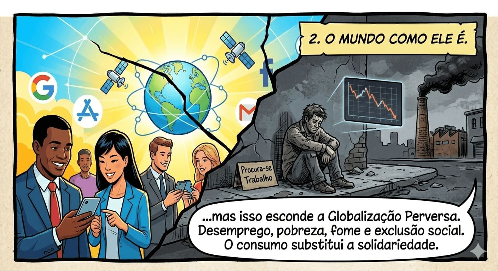
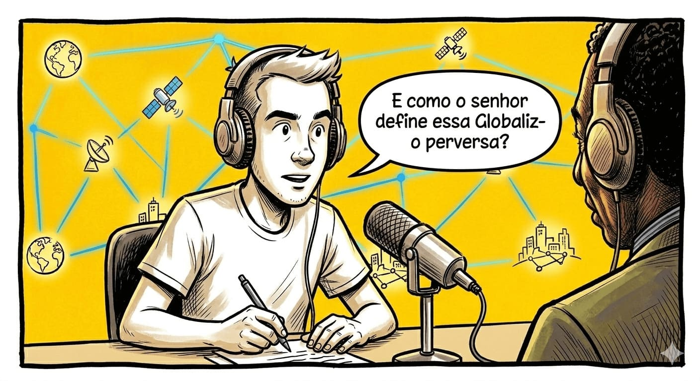
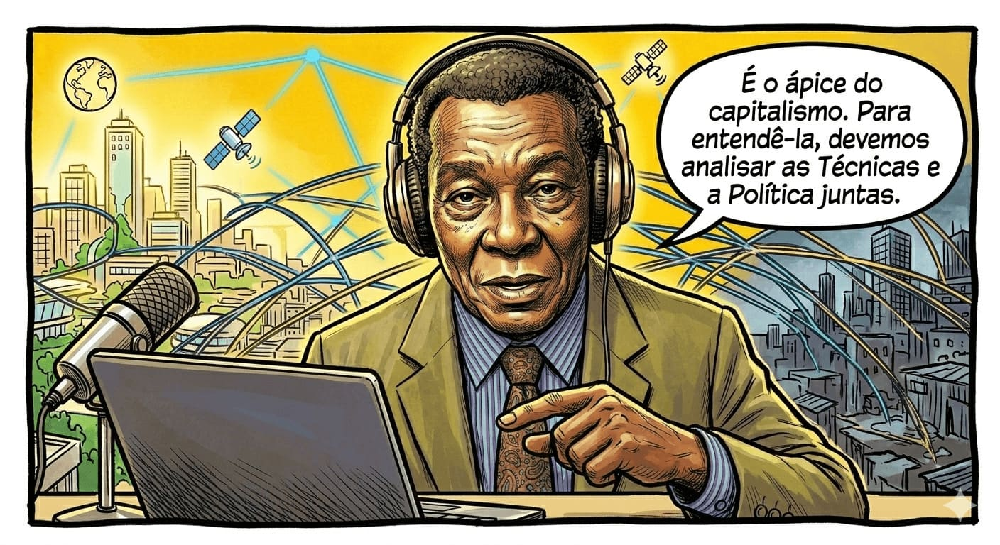
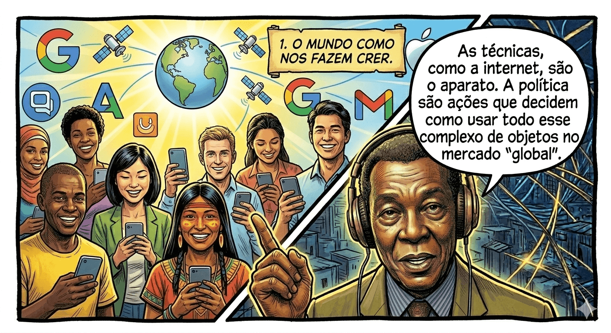
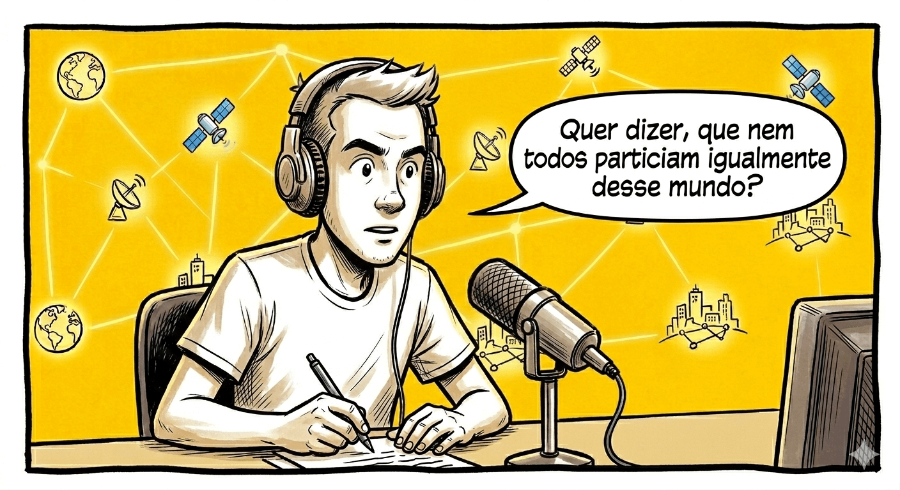
A velocidade e a informação são para poucos.
PÁGINA 3: RESISTÊNCIA E POSSIBILIDADE
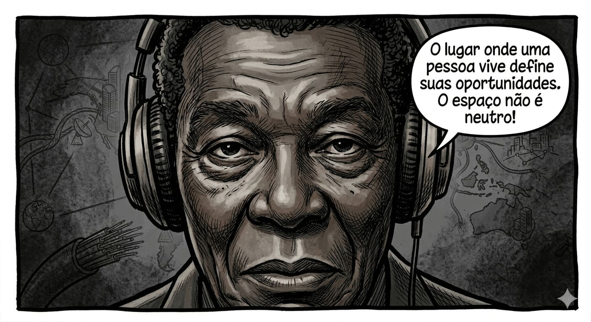
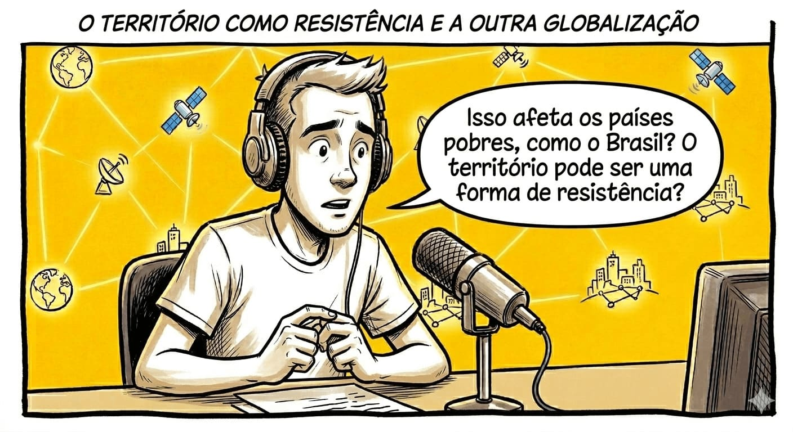
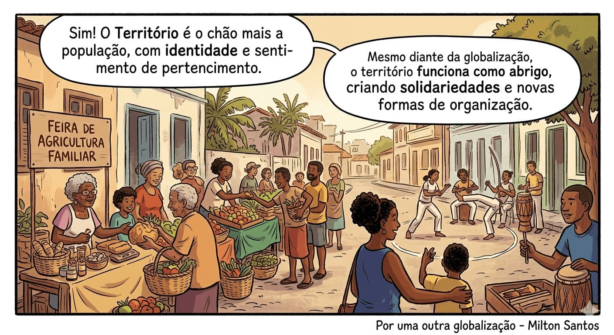
Cena inspirada na solidariedade horizontal de Milton Santos.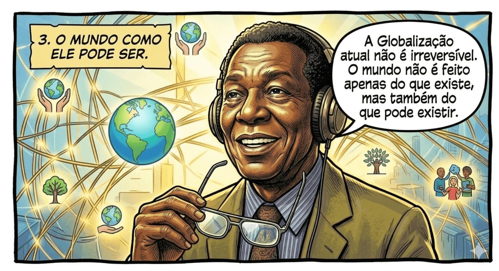
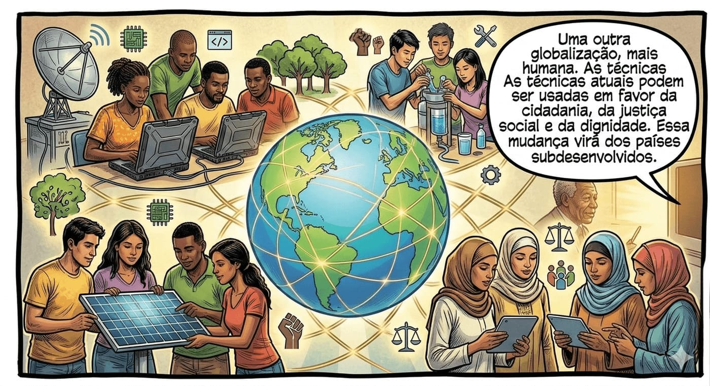
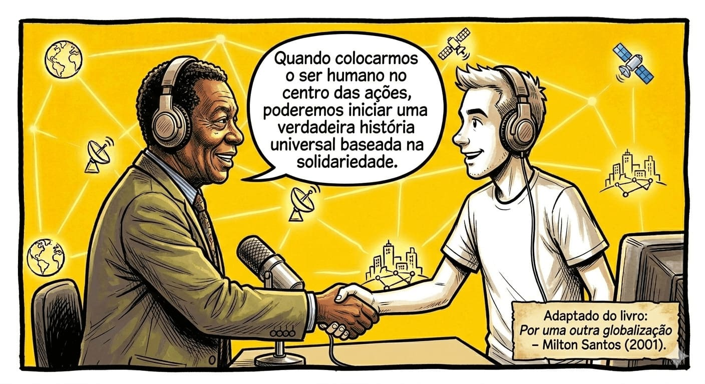
Duvid: Bem-vindos ao Duvid Podcast! Hoje recebemos um convidado especial: o geógrafo brasileiro Milton Santos, nascido na Bahia em 1926. Reconhecido internacionalmente, ele construiu uma importante trajetória acadêmica, incluindo anos de trabalho em universidades no exterior, e deixou um grande legado para o estudo das relações entre espaço, sociedade e globalização.
Nesta conversa, vamos discutir as principais ideias de seu livro Por uma outra Globalização: do pensamento único à consciência universal, refletindo sobre o mundo atual e as possibilidades de transformá-lo. É uma honra recebê-lo conosco.
Prof. Milton Santos: Eu estou muito sensível em participar desse programa e conversar sobre Globalização, que é nosso filé mignon, afinal. (risos).
Duvid: Prof. o Sr. poderia nos dizer, inicialmente, o que é o mundo hoje?
Prof. Milton Santos: Certamente. Vivemos em um mundo confuso, não apenas porque ele é complexo, mas porque é apresentado de forma confusa. Há um enorme avanço das ciências e das técnicas e uma aceleração da vida marcada pela velocidade. Para compreender esse mundo, é preciso reconhecer que ele não é único: na verdade, existem três mundos coexistindo em um só.
Duvid: e quais seriam esses mundos, professor?
Prof. Milton Santos: O primeiro é o mundo como nos fazem crer, onde a globalização aparece como uma fábula. Fala-se em aldeia global, integração entre os povos e igualdade de oportunidades, mas isso esconde o aumento das desigualdades e o fortalecimento do mercado financeiro. O segundo é o mundo como ele é, marcado pela globalização perversa. Nele observamos desemprego, pobreza, fome, crises constantes e exclusão social. A competitividade exagerada e o culto ao consumo substituem valores como solidariedade. O terceiro é o mundo como ele pode ser, baseado em uma outra globalização, mais humana. As mesmas técnicas que hoje servem ao capital poderiam ser utilizadas para atender às necessidades da população e fortalecer a cidadania.
Duvid: E de que forma esses mundos estão ligados à globalização? Como podemos defini-la?
Prof. Milton Santos: Eu creio que a globalização é, de certa forma, o ápice do processo de internacionalização do mundo capitalista. Para entende-la, devemos analisar as técnicas e a política de forma conjunta. As técnicas são esse aparato que estão a nossa disposição, como a internet por exemplo, e a política são as ações que asseguram como devemos usar todo esse emaranhado de objetos em um mercado, agora chamado de global.
Duvid: E como o senhor define a globalização?
Prof. Milton Santos: A globalização é o ponto mais avançado do processo de internacionalização do capitalismo. Para entendê-la, é preciso analisar conjuntamente as técnicas e a política. As técnicas, como a internet e os computadores, só funcionam conforme decisões políticas e interesses econômicos.
Duvid: O que diferencia a globalização atual de outros períodos históricos, como o Império Romano ou as grandes navegações?
Prof. Milton Santos: A principal diferença está no sistema técnico atual. Nunca antes foi possível agir em vários lugares ao mesmo tempo e conhecer acontecimentos do mundo inteiro de forma imediata. Hoje, cada lugar do planeta está conectado aos demais, ainda que de maneira desigual.
Duvid: Então todos participam igualmente desse mundo globalizado?
Prof. Milton Santos: Não. Essa é uma das grandes ilusões da globalização. A velocidade, a informação e as oportunidades estão disponíveis apenas para uma parte da população. O dinheiro circula livremente pelo mundo, mas as pessoas não.

Duvid: Isso ajuda a explicar por que as desigualdades continuam existindo?
Prof. Milton Santos: Exatamente. O espaço não é neutro. O lugar onde uma pessoa vive define suas oportunidades como produtora, consumidora e cidadã. Pessoas com a mesma formação e renda podem ter vidas muito diferentes dependendo do território em que estão. Por isso, nem tudo depende apenas do esforço individual.
Duvid: O senhor considera a globalização atual negativa?
Prof. Milton Santos: Eu a considero perversa. Há a violência da informação, usada para manipular consciências por meio da publicidade, e a violência do dinheiro, que se tornou o centro do mundo. O ser humano deixou de ser prioridade. Vivemos uma época marcada pelo medo, pelo individualismo e pela perda da solidariedade.
Duvid: Como isso afeta os países pobres, como o Brasil?
Prof. Milton Santos: O Brasil faz parte dessa globalização de forma desigual. Grande parte da população compõe o que chamo de nação passiva, que participa apenas de maneira marginal do mercado global. Apesar disso, essa população cria formas próprias de resistência e mantém uma cultura viva, ligada ao território.
Duvid: O território pode ser uma forma de resistência?
Prof. Milton Santos: Sim. O território não é apenas o espaço físico, mas o chão mais a população, com identidade e sentimento de pertencimento. Mesmo diante da globalização, o território funciona como abrigo, permitindo a criação de solidariedades e novas formas de organização da vida.

Duvid: Isso significa que pode existir uma outra globalização?
Prof. Milton Santos: Sim. A globalização atual não é irreversível. O mundo não é feito apenas do que existe, mas também do que pode existir. As técnicas atuais podem ser usadas de outra maneira, em favor da cidadania, da justiça social e da dignidade humana.
Duvid: Essa mudança pode partir de onde?
Prof. Milton Santos: Ela não virá dos países centrais, mas dos países subdesenvolvidos. É nesses lugares que surge uma consciência crítica baseada na experiência da escassez e da exclusão. A história ainda não acabou; ela está apenas começando.
Duvid: Para finalizar, que mensagem o senhor deixaria aos estudantes?
Prof. Milton Santos: A globalização atual pode ser transformada. Temos as condições técnicas, materiais e intelectuais para construir um mundo mais humano. Quando colocarmos o ser humano no centro das ações, poderemos iniciar uma verdadeira história universal baseada na solidariedade.
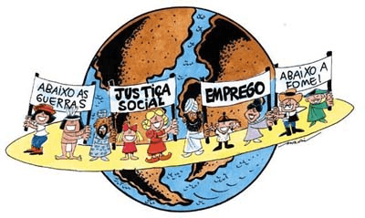
QUESTÃO PRÁTICA
Qual é a visão do professor Milton Santos sobre os diferentes mundos existentes atualmente?

QUESTÃO PRÁTICA
De acordo com o professor Milton Santos, qual é uma das perspectivas negativas da globalização?
O Mundo Atual: Desenvolvimento, Desigualdades e Globalização
Vivemos em um mundo marcado por profundas transformações econômicas, tecnológicas e sociais. Ao mesmo tempo em que observamos grandes avanços científicos, crescimento econômico e integração entre países, também convivemos com desigualdades intensas, pobreza, exclusão social e diferenças significativas entre regiões do planeta.
Para compreender o mundo atual, é fundamental analisar alguns conceitos centrais da Geografia: desenvolvimento e subdesenvolvimento, divisão internacional do trabalho, desigualdades socioespaciais e globalização.
Durante muito tempo, os países foram classificados apenas como desenvolvidos ou subdesenvolvidos, com base principalmente em critérios econômicos, como renda e nível de industrialização. Os países desenvolvidos, em geral localizados na Europa, América do Norte e Japão, apresentam alto grau de industrialização, elevado PIB, boa infraestrutura e amplo acesso à saúde, educação e tecnologia.
Já os países subdesenvolvidos, concentrados principalmente na África, América Latina e parte da Ásia, enfrentam problemas como pobreza, desigualdade social, baixa industrialização, dependência econômica e dificuldades no acesso a serviços básicos. Hoje, essa classificação é considerada limitada, pois existem países emergentes, como Brasil, Índia e China, e porque o desenvolvimento envolve também qualidade de vida, medida por indicadores como o IDH.
A Divisão Internacional do Trabalho refere-se à especialização produtiva dos países na economia mundial. Em geral, os países desenvolvidos concentram atividades de maior valor agregado, como tecnologia, pesquisa científica e serviços financeiros, enquanto países subdesenvolvidos ou emergentes se especializam na exportação de matérias-primas, produção agrícola e uso de mão de obra barata, reforçando relações de dependência econômica.
As desigualdades socioespaciais aparecem tanto entre países quanto dentro deles. Nas cidades, é comum a convivência de áreas bem estruturadas com regiões marcadas pela precariedade. O lugar onde uma pessoa vive influencia diretamente suas oportunidades de estudo, trabalho e acesso a serviços, mostrando que o espaço geográfico é produzido de forma desigual.
A globalização intensifica as relações entre países por meio do avanço das tecnologias, dos transportes, do comércio e da circulação de capitais. Apesar de gerar avanços tecnológicos e maior circulação de informações, ela também amplia desigualdades, beneficia grandes empresas e dificulta a vida de milhões de trabalhadores, evidenciando seus contrastes e contradições.
O mundo atual é marcado por fortes contrastes: grandes avanços convivem com pobreza e exclusão social. A Geografia nos ajuda a compreender que essas desigualdades não são naturais, mas resultado de escolhas políticas, econômicas e sociais, convidando à reflexão sobre modelos de desenvolvimento mais justos e humanos.
Infográfico - Resumo
 Fonte: Organizado e revisado pelo autor.
Fonte: Organizado e revisado pelo autor.
As perguntas nos levam a questionar o status quo e a desafiar ideias preestabelecidas, impulsionando o progresso e a transformação em todas as áreas do conhecimento.
P: Como a globalização afeta as desigualdades econômicas e sociais entre os países?
R: A globalização pode ampliar as desigualdades econômicas e sociais entre os países devido à assimetria de recursos e poder. Por exemplo, a empresa multinacional Nike, sediada nos Estados Unidos, produz seus produtos em países de mão de obra barata, como China, Vietnã e Indonésia. Embora isso possa trazer empregos e impulsionar a economia desses países, a maior parte do lucro e do controle sobre a marca e a cadeia de suprimentos permanece concentrada nos países desenvolvidos, acentuando as disparidades econômicas e sociais.
P: Quais são as possíveis consequências da globalização para a cultura e identidade de um país?
R: A globalização pode levar à homogeneização cultural, à perda de tradições e à influência dominante de certos valores e estilos de vida. Um exemplo disso é a disseminação do cinema hollywoodiano ao redor do mundo. Filmes de grandes estúdios como a Disney e a Marvel alcançam audiências globais, levando à popularização da cultura americana e influenciando as narrativas cinematográficas de outras regiões. Isso pode resultar na supressão ou marginalização das produções culturais locais, levantando questões sobre a preservação da diversidade cultural.
P: Como a tecnologia e a internet têm impulsionado a globalização?
R: A tecnologia e a internet revolucionaram a forma como nos comunicamos e fazemos negócios, impulsionando a globalização. Um exemplo é o crescimento do comércio eletrônico e a presença de empresas como a Amazon. Por meio da plataforma online da Amazon, vendedores de diferentes partes do mundo podem alcançar consumidores internacionais, ampliando seus mercados e eliminando barreiras geográficas. Isso permite que pequenos empreendedores tenham acesso a uma audiência global, promovendo a diversificação do comércio internacional e proporcionando maior conectividade econômica entre diferentes países. No entanto, é importante ressaltar que nem todos os países têm igual acesso e benefícios da tecnologia, o que pode perpetuar disparidades digitais entre nações desenvolvidas e em desenvolvimento.
Antes de finalizar, vamos fazer as questões!
Para saber mais:
Referências Bibliográficas
SANTOS, Mílton.
Por uma outra globalização: do
pensamento único à consciência universal.
Rio de Janeiro: Record, 2000.
SANTOS, Milton.
O espaço do cidadão.
São Paulo:
Editora da USP, 2007.
VOGLER, Christopher.
A jornada do escritor.
Rio
de
Janeiro: Nova Fronteira, 2006.
SOJA, Edward.
Postmetropolis: Critical Studies of
Cities
and Regions.
Oxford: Blackwell, 2000.